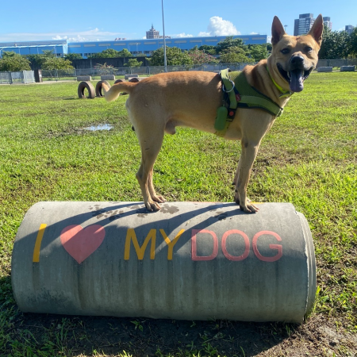

[桃園市蘆竹區] 聰明的乖乖想要一個愛他的家
-

開放領養中
送養案件編號：A161163930565
動物類別：狗
建立日期：2021-01-26
結案日期：
動物名稱： 乖乖
動物性別： 男
結紮狀態： 否 (預定2021-12-31)
可送養縣市範圍： 台北市 基隆市 宜蘭縣 新北市 新竹市 新竹縣 桃園市 南投縣 台中市 彰化縣 苗栗縣 雲林縣 台南市 嘉義市 嘉義縣 屏東縣 高雄市 台東縣 花蓮縣
乖乖需要一個家
有人可以給他個家嗎
他叫乖乖是個帥哥
他很乖會聽話又愛撒嬌還會握手
還會看人眼色也聰明
109年過年過後他被棄養了一陣子了
攤子生意沒做了也已收光
現在已經裝潢做別的生意
乖乖的故事：
2020/3/20
這幾天乖乖不見被好心年輕人帶去寵物店掃晶片怕他危險路上跑來跑去所以被人帶走等原因
我們一直找他..還好我有去問到他被帶去哪了
後來有個暫時收留他的好心店家老闆一家人
帶乖乖看醫生、吃好吃的、洗澡、點藥換新項圈等。
但是老闆他們不能久留他
他們很喜歡乖乖
我們非常感謝他們這幾天照顧乖乖
我們帶乖乖回到原本他待的地方
努力幫牠在找找能夠疼愛一輩子乖乖的主人
更新聽到的壞消息
2020/3/21
乖乖待的地方隔壁自助餐阿伯說
後面社區有幾個人被乖乖吠過
他們出來都會帶棍子打乖乖
把牠打進巷子裡..阿伯說總有一天會被他們打死還叫警察過 但是警察不處理流浪狗！
他們出門都帶鐵棍 故意來攻擊乖乖
今天沒帶棍子 就拿拖鞋打！！！
你不愛牠不喜歡牠請不要打牠不要傷害牠
2020/3/23開始我們暫時收留了乖乖讓牠住在叔叔家
帶牠散步、帶牠看醫生、保護牠。不讓牠在外面被欺負。
如果有人能給乖乖穩定更好更幸福的家拜託請私訊我！
家裡討論後大人們覺得不可以讓他久留。
曾經欺負牠的人都住在附近，希望給乖乖一個新的生活環境。
我們希望他能過更好的生活希望有人能陪伴乖乖多點的時間能夠更愛他。讓他有更加穩定的家。
所以決定要繼續幫他找更好愛護乖乖的飼主！
因為以前流浪時有被欺負 不親狗不親貓
在室外大小便(有在家大小便過可教育)
乖乖目前還未結育(確定送養會結紮)
已施打十合一疫苗已驅蟲洗澡也很健康
如果有人喜歡乖乖要領養可以私訊
能夠幫我分享出去也請多分享
非常感謝♥
有人可以給他個家嗎
他叫乖乖是個帥哥
他很乖會聽話又愛撒嬌還會握手
還會看人眼色也聰明
109年過年過後他被棄養了一陣子了
攤子生意沒做了也已收光
現在已經裝潢做別的生意
乖乖的故事：
2020/3/20
這幾天乖乖不見被好心年輕人帶去寵物店掃晶片怕他危險路上跑來跑去所以被人帶走等原因
我們一直找他..還好我有去問到他被帶去哪了
後來有個暫時收留他的好心店家老闆一家人
帶乖乖看醫生、吃好吃的、洗澡、點藥換新項圈等。
但是老闆他們不能久留他
他們很喜歡乖乖
我們非常感謝他們這幾天照顧乖乖
我們帶乖乖回到原本他待的地方
努力幫牠在找找能夠疼愛一輩子乖乖的主人
更新聽到的壞消息
2020/3/21
乖乖待的地方隔壁自助餐阿伯說
後面社區有幾個人被乖乖吠過
他們出來都會帶棍子打乖乖
把牠打進巷子裡..阿伯說總有一天會被他們打死還叫警察過 但是警察不處理流浪狗！
他們出門都帶鐵棍 故意來攻擊乖乖
今天沒帶棍子 就拿拖鞋打！！！
你不愛牠不喜歡牠請不要打牠不要傷害牠
2020/3/23開始我們暫時收留了乖乖讓牠住在叔叔家
帶牠散步、帶牠看醫生、保護牠。不讓牠在外面被欺負。
如果有人能給乖乖穩定更好更幸福的家拜託請私訊我！
家裡討論後大人們覺得不可以讓他久留。
曾經欺負牠的人都住在附近，希望給乖乖一個新的生活環境。
我們希望他能過更好的生活希望有人能陪伴乖乖多點的時間能夠更愛他。讓他有更加穩定的家。
所以決定要繼續幫他找更好愛護乖乖的飼主！
因為以前流浪時有被欺負 不親狗不親貓
在室外大小便(有在家大小便過可教育)
乖乖目前還未結育(確定送養會結紮)
已施打十合一疫苗已驅蟲洗澡也很健康
如果有人喜歡乖乖要領養可以私訊
能夠幫我分享出去也請多分享
非常感謝♥
已施打十合一疫苗已驅蟲洗澡也很健康
希望能夠替乖乖找一個遮風避雨給牠愛的一個家